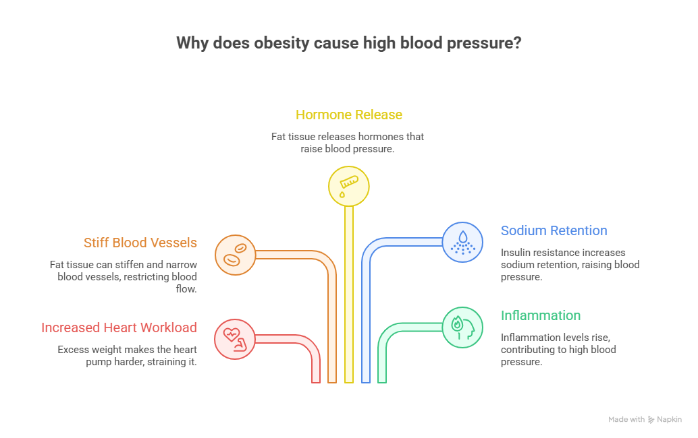
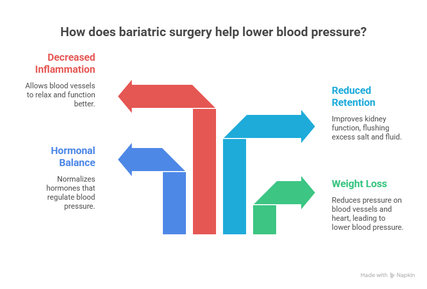
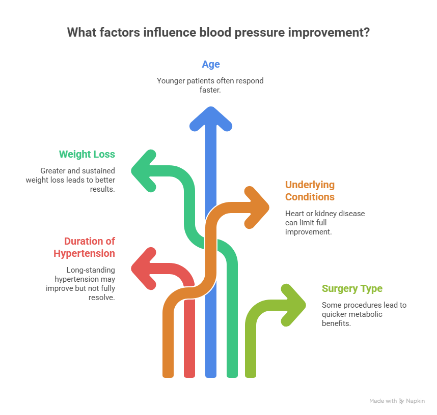

High blood pressure, also known as hypertension, is one of the most common health conditions linked to obesity. People carrying excess weight often experience increased strain on the heart and blood vessels, leading to consistently high blood pressure levels. Because of this strong connection, many patients ask an important question: does bariatric surgery lower blood pressure?
Does Bariatric Surgery Lower Blood Pressure?
The answer is yes. Bariatric surgery has been shown to significantly reduce blood pressure in many patients, especially when high blood pressure is related to obesity.
Book Your Appointment TodayThe answer is yes. Bariatric surgery has been shown to significantly reduce blood pressure in many patients, especially when high blood pressure is related to obesity. In some cases, patients are even able to reduce or discontinue their blood pressure medications under the guidance of a medical professional, such as Dr. Atul Peters.
This blog explains how bariatric surgery helps lower blood pressure, who benefits the most, and what long-term results patients can expect.
Understanding Bariatric Surgery
Bariatric surgery is a medical treatment designed to help people with obesity lose weight when diet, exercise, and medications have not worked effectively. It is not a cosmetic procedure but a health-focused surgery that improves weight-related conditions such as high blood pressure, diabetes, heart disease, and joint problems.
This surgery works by changing how the digestive system handles food. Depending on the type of procedure, bariatric surgery may reduce the size of the stomach, limit how much food a person can eat, or change how nutrients are absorbed. These changes help patients feel full sooner, eat smaller portions, and reduce overall calorie intake.
Link Between Obesity and High Blood Pressure

Before understanding how bariatric surgery helps, it’s important to know why obesity causes high blood pressure in the first place.
When a person gains excess weight:
- The heart has to work harder to pump blood
- Blood vessels become stiff and narrow
- Extra fat tissue releases hormones that raise blood pressure
- Insulin resistance increases sodium retention
- Inflammation levels rise throughout the body
All these factors combine to push blood pressure higher. Over time, uncontrolled hypertension can lead to heart disease, stroke, kidney damage, and vision problems.
Types of Bariatric Surgery and Their Effect on Blood Pressure
Bariatric surgery includes different procedures, each designed to support weight loss in a specific way. The choice of surgery depends on a patient’s health condition, weight, and medical goals. Below are the most commonly performed types of bariatric surgery:
1. Sleeve Gastrectomy
Sleeve Gastrectomy is one of the most commonly performed bariatric procedures. In this surgery, a large portion of the stomach is removed, leaving a narrow, tube-shaped stomach. This significantly reduces food intake and helps patients feel full much faster. As weight loss begins, the pressure on the heart and blood vessels decreases, leading to improved blood flow and reduced blood pressure levels. Hormonal changes after sleeve gastrectomy also help lower stress hormones and improve insulin sensitivity, which supports better blood pressure control over time.
2. Gastric Bypass Surgery
Gastric Bypass Surgery works by creating a small stomach pouch and rerouting part of the digestive tract. This not only limits food intake but also changes how the body absorbs calories and nutrients. Because of these metabolic changes, patients often see faster improvements in obesity-related conditions, including high blood pressure. Blood pressure reduction may begin early after surgery due to improved hormone regulation and reduced inflammation, making gastric bypass especially effective for patients with long-standing hypertension.
3. Mini Gastric Bypass
Mini Gastric Bypass is a simplified version of traditional gastric bypass that combines stomach restriction with reduced calorie absorption. This procedure leads to significant and sustained weight loss, which helps reduce strain on the heart. As body weight decreases, blood vessels relax, and kidney function improves, allowing better regulation of fluids and sodium. These changes contribute to steady and long-term improvement in blood pressure levels.
How Bariatric Surgery Helps Lower Blood Pressure
Bariatric surgery is not just about reducing food intake—it creates powerful metabolic and hormonal changes that directly impact blood pressure control.

1. Significant and Sustained Weight Loss
The most obvious benefit is substantial weight loss. Losing excess weight reduces:
- Pressure on blood vessels
- Resistance in arteries
- Workload on the heart
Even a 5–10% reduction in body weight can lead to noticeable blood pressure improvement. Bariatric surgery often results in 25–35% total body weight loss, making the impact much stronger.
2. Improved Hormonal Balance
After bariatric surgery:
- Stress hormones decrease
- Insulin sensitivity improves
- Hormones that regulate appetite and metabolism normalize
These changes help the body maintain healthier blood pressure levels naturally.
3. Reduced Salt and Fluid Retention
Obesity increases sodium retention in the kidneys, which raises blood pressure. Weight loss after surgery improves kidney function, helping the body flush excess salt and fluid, leading to lower blood pressure.
4. Decreased Inflammation
Chronic inflammation caused by obesity damages blood vessels. Bariatric surgery reduces inflammatory markers, allowing blood vessels to relax and function better.
Can Bariatric Surgery Cure High Blood Pressure Permanently?
Bariatric surgery is not a guaranteed cure, but it is one of the most effective long-term treatments for obesity-related hypertension.
Blood pressure may return if:
- Weight is regained
- Diet becomes unhealthy
- Physical activity is ignored
- Follow-up care is missed
Patients who maintain healthy habits often enjoy long-lasting blood pressure control.
Does Bariatric Surgery Lower Blood Pressure in All Patients?
Bariatric surgery helps lower blood pressure in most patients, but the level of improvement can vary from person to person. Individuals whose high blood pressure is mainly caused by obesity usually experience the most noticeable benefits. As body weight decreases, the heart works more efficiently, blood vessels relax, and hormonal balance improves, all of which support healthier blood pressure levels. Many patients see improvement within a few months of surgery, while others notice gradual changes over a longer period.
However, bariatric surgery may not completely normalize blood pressure in every case. Patients who have had hypertension for many years or who have other medical conditions may still require some medication, although often at a reduced dose. The surgery should be seen as a powerful tool for better control rather than a guaranteed cure for all patients.
Factors that Influence Blood Pressure Improvement

- Duration of high blood pressure: Long-standing hypertension may improve, but not fully resolve
- Amount of weight loss: Greater and sustained weight loss leads to better results
- Age of the patient: Younger patients often respond faster
- Underlying health conditions: Heart or kidney disease can limit full improvement
- Type of bariatric surgery: Some procedures lead to quicker metabolic benefits
Lifestyle Changes that Enhance Blood Pressure Results
Surgery works best when combined with healthy habits:
- Low-salt, balanced diet
- Regular physical activity
- Stress management
- Adequate sleep
- Avoiding smoking and alcohol
These steps help maintain weight loss and protect heart health.
Risks and Considerations
While bariatric surgery is safe when done correctly, it still involves:
- Temporary nutritional adjustments
- Regular follow-ups
- Lifelong lifestyle commitment
Blood pressure must be monitored carefully, especially during rapid weight loss.
Does Bariatric Surgery Lower Blood Pressure?
The answer is yes. Bariatric surgery has been shown to significantly reduce blood pressure in many patients, especially when high blood pressure is related to obesity.
Book Your Appointment TodayLong-Term Studies and Evidence
Long-term medical research consistently shows:
- Sustained blood pressure reduction
- Lower cardiovascular risk
- Reduced heart attack and stroke incidence
- Improved life expectancy
This confirms that the answer to does bariatric surgery lower blood pressure is strongly supported by scientific evidence.
Final Thoughts
Bariatric surgery has proven to be a highly effective option for managing obesity-related health conditions, including high blood pressure. By promoting significant and sustained weight loss, the surgery helps reduce strain on the heart, improve blood vessel function, and balance hormones that influence blood pressure. Many patients experience better control of hypertension, reduced dependence on medications, and an overall improvement in quality of life when the procedure is combined with healthy eating, regular physical activity, and long-term medical follow-up.
However, the success of bariatric surgery depends greatly on choosing the right procedure and receiving expert care throughout the journey. Consulting a Best Bariatric Surgeon in Delhi ensures proper evaluation, personalized treatment planning, and ongoing support for long-term results. With the right guidance and commitment to lifestyle changes, bariatric surgery can play a transformative role in improving heart health and achieving lasting wellness.
Frequently Asked Questions
Does Bariatric Surgery lower blood pressure permanently?
Can I stop BP medicines after Bariatric Surgery?
How soon will blood pressure improve after Bariatric Surgery?
Which surgery works best for high blood pressure?
Is Bariatric Surgery safe for BP patients?
Recommended Further Reading
Have Personal Health Questions?
Consult with Dr. Atul Peters and our expert multidisciplinary team at Max Smart Super Speciality Hospital, Saket, New Delhi.
Book Your Consultation